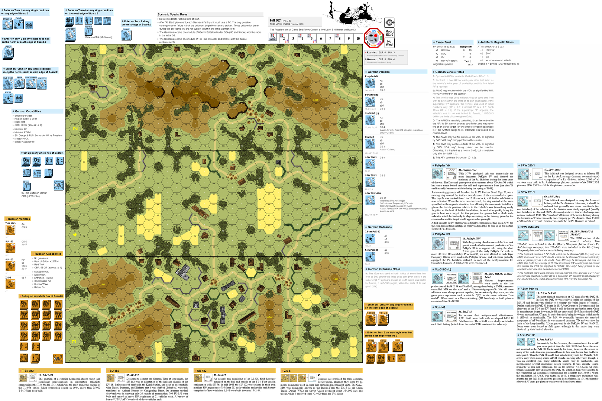
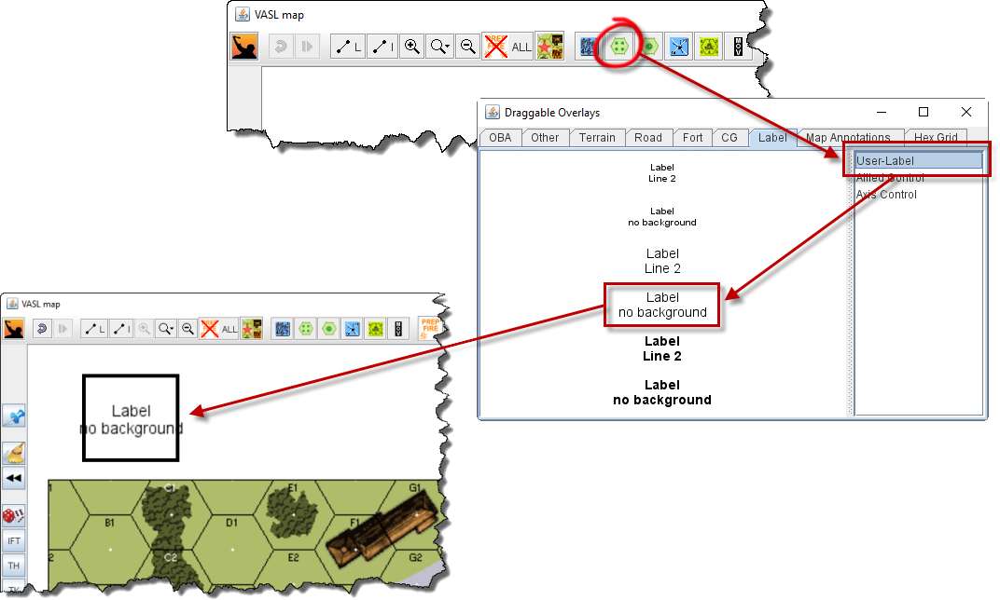
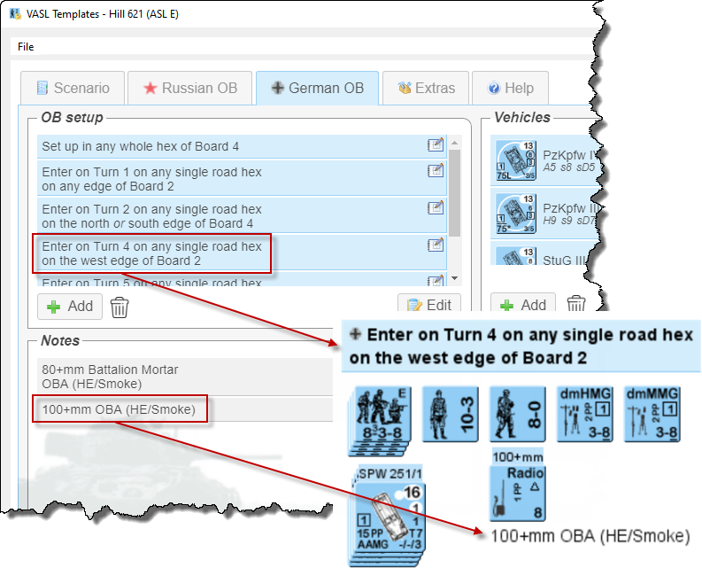
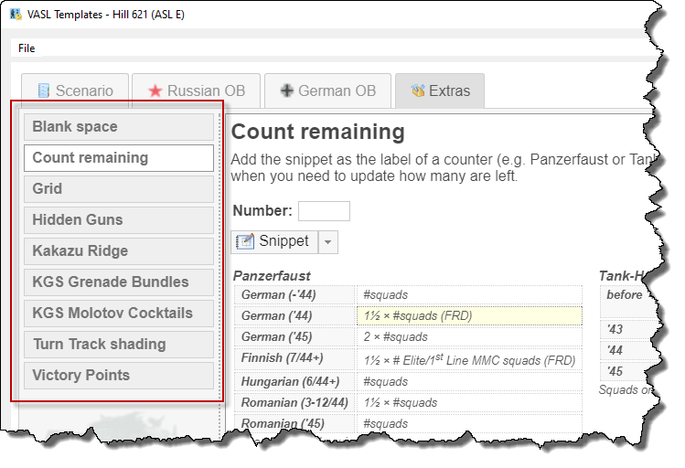
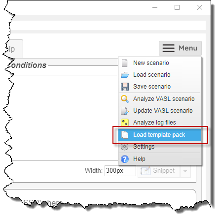

VASL Templates is a web application that runs in a browser, but since it hasn't been set up as a web site on the public internet, you will need to run the web server yourself.
As a convenience, a program is provided that bundles the web server together with an embedded browser, so that it runs as if it were a normal desktop application.
Installing on Windows
If you're using Windows, you should get the pre-built version from Github, unpack it somewhere, then run vasl-templates.exe
If the program won't start because a DLL is missing from your computer, install the VC2015 runtime (get the 32-bit version, vc_redist.x86.exe, even if you are running 64-bit Windows).
If you don't see anything in the main window, check the notes below about configuring OpenGL.
Running from source
If you're on a Mac or Linux, you can run the program directly from the source code. Get a copy from Github in the usual way, by git clone'ing it, or downloading a ZIP and unpacking it somewhere.
The web server was written and tested using Python 3.6, but it doesn't do anything particularly funky, so any recent version of Python should work.
While not essential, it is strongly recommended that you set up a virtual environment first. Then, install the requirements:
Running the desktop application
If you're on Windows, the Qt runtime will have been installed as part of PyQt5 (when you did the pip install above), but if you're in a virtual environment and you're getting "DLL load failed" errors, this is due to a problem with the way Python sets up the virtualenv. In the virtualenv's scripts/ sub-directory, there should be two Python DLL's, so if you're missing python3.dll, copy it over from the Python installation the virtualenv was created from, and you should be good to go.
If you're on Linux, you will need to install Qt 5.10.0. While your distro may have it as a package, I didn't have much luck on Fedora 27, and had to install it manually using their installer.
Then, just run the vasl-templates command.
Running just the web server
The simpler option is to just run the web server:
I'm having problems running the desktop application
The desktop application uses OpenGL for the embedded browser, so if you are getting error messages about OpenGL, or the main window is not displaying properly, you can try configuring OpenGL to work in a different way.
Create a file called debug.cfg in $/lib/vasl_templates/webapp/config/ (the same directory that contains a file called app.cfg) that looks like this:
If you're on Windows, this page might also help.
In the worst case, you can set up your debug.cfg file like this:
 VASL Templates makes it easy to set up attractive VASL scenarios, with loads of useful information embedded to assist with game play.
We'll show how by walking through a setup of everyone's favorite scenario, Hill 621. Click on the screenshot to the right to see the finished scenario.
You can find more examples here, with files that you can load into the program, together with the generated VASL scenarios.
Adding the scenario details
 First, we enter the basic details about the scenario.
First, we enter the basic details about the scenario.
Click on one of the Snippet buttons, and the program will generate an HTML snippet and put it into your clipboard, which you can then copy into a VASL label.
 To create a label in VASL, open the Draggable Overlays window, and drag a label onto the main window.
Labels come in two parts, which are accessible via the right-click menu, or press Ctrl-L and Ctrl-2 to access each one. I always just use the first line, so I delete everything in line 2.
The thick black box indicates that the label is selected. If you click elsewhere on the main window, it goes away, and the label will remain in place even if you click on it, or try to drag it. To select it again, Shift-click somewhere in the box, and you will be able to move it around, or edit it. This can sometimes be difficult to find, since it's not visible on-screen, but it will be in the middle (vertically and horizontally) of the label.
 Once you have a label in VASL, copy the HTML snippet generated above into it.
Once you have a label in VASL, copy the HTML snippet generated above into it.
Repeat the process to add the ELR and SAN for both players, and you will now have two labels that you can position in the VASL scenario.
Adding victory conditions and SSR's
Adding the scenario's victory conditions is straight-forward. We're generating HTML snippets, so we can type in things like ≥ to get ≥ in the VASL label.

Note that we explicitly set a width for the snippet (240px), which caused the text to wrap onto a new line. You could also do this by manually inserting <br> tags where you want line-breaks.
 To add SSR's, click on the green plus button in the SSR section and add the SSR text.
To add SSR's, click on the green plus button in the SSR section and add the SSR text.
Click on the OK button when you're done, or press Ctrl-Enter.
If you want to go back and change the text of an SSR, just double-click on it.
Once they're all in, click on the Snippet button to get a nicely formatted bullet list.
Adding each player's OB
 Adding each vehicle and ordnance for each player is just a matter of selecting them from a list, and the generated HTML snippet will produce a table of information for each one (see right). Very handy if you have a menagerie of armor and you're, say, looking for something that can fire Smoke.
Adding each vehicle and ordnance for each player is just a matter of selecting them from a list, and the generated HTML snippet will produce a table of information for each one (see right). Very handy if you have a menagerie of armor and you're, say, looking for something that can fire Smoke.
The scenario date is taken into account when generating these tables e.g. APCR for the Pz IVH is A52, but since the program knows the scenario is set in 1944, it just shows A5. Had the scenario been set in 1941, it wouldn't be shown at all.
Double-click on an entry to make changes to it e.g. because an SSR changes its capabilities, or you'd like to add a note.
 We can also add ad-hoc notes describing where and how units should setup.
Click on the icon in each note to generate its snippet, or Shift-click on it.
 Finally, if special support weapons such as PF and BAZ are in play, snippets are available with information for them, and as with vehicles/ordnance, they are date-aware and update themselves accordingly.
Finally, if special support weapons such as PF and BAZ are in play, snippets are available with information for them, and as with vehicles/ordnance, they are date-aware and update themselves accordingly.
Extra templates

Extra templates are also available to generate ad-hoc snippets e.g. to keep track of how many PF shots you have left, or to generate a shaded box that can be inserted behind the Turn Track to indicate an LV Hindrance.
Configuring the program
Showing VASL counter images in the UI
If you want VASL counter images to appear in the UI, you need to tell the program where to find the VASL module (i.e. the vasl-X.X.X.vmod file you load into VASSAL):
- If you are running the Windows desktop application, open the Server settings dialog from the File menu and configure it there.
- If you are running the web server directly, create a file called site.cfg in the $/vasl_templates/webapp/config/ directory and configure it there (there is an example file you can rename and edit).
Once you've configured the VASL module, if you want to also show VASL counter images in the OB snippets that you copy in the VASL scenario, turn this on in the User settings dialog from the main application menu.
How template files work
The HTML snippets are generated from template files, which are simply text files that contain the HTML you want to insert into the VASL labels, but with placeholders for the scenario name, victory conditions, each player's OB, etc. The user enters these details into the program, and when they want to generate a snippet, all the placeholders are replaced in the template with the real values, thus producing an HTML snippet specific to that scenario.
The template files can be found in $/lib/vasl_templates/webapp/data/default-template-pack/ (where $ is where you've installed the program).
Placeholders and template conditionals
 We'll take a look at the ssr.j2 file, which is used to generate snippets for the SSR's.
We'll take a look at the ssr.j2 file, which is used to generate snippets for the SSR's.
Open the file in a text editor (if you're on Windows, you will probably need to right-click on the file and choose Open with...), and you'll see something like this:
The template looks like normal HTML, but with some extra stuff. Things that look like {% ... %} are commands to the template processor. At the top of the file, we see this:
So, if the user has specified a width of, say 300px, this is what will be inserted into the final HTML snippet:
Looping over lists
There will often be multiple SSR's, and near the bottom of the file, we can see how these are handled:
 If the user had entered the SSR's as shown in the screenshot, then we would get the following inserted into the generated HTML snippet:
If the user had entered the SSR's as shown in the screenshot, then we would get the following inserted into the generated HTML snippet:
Template packs
If you want to customize how the HTML snippets are generated, you could just edit the files directly, but the down-side of doing this is that if you install a new version of the program, you will lose your changes.
 A better way is to create your own set of template files, ZIP them up and load it as a template pack.
If you're running the desktop application, you can specify the template pack to start with, so that you don't have to manually upload it each time i.e.
 When you're writing a new template file, it would be painful to have to ZIP up and upload a new template pack every time you made a change, so you can edit templates directly within the program (see screenshot).
When you're writing a new template file, it would be painful to have to ZIP up and upload a new template pack every time you made a change, so you can edit templates directly within the program (see screenshot).
Changes you make are live i.e. they will take effect immediately, but note that there is no way to save your changes, so once you're happy with how the template is working, you need to copy it out and save it somewhere.
Setting up
After cloning the repo, install the developer requirements:
Note that since pylint is run as part of these tests, this should be done from the root directory of the repo.
NOTE: Internet Explorer is also supported as a WebDriver, but due to differences in the way it works, some tests are currently failing for this.
Compiling the VASSAL shim
The program uses VASSAL to update VASL scenarios (.vsav files), and since this is written in Java, a helper program has been written in Java to do this.
To compile the program, go to the $/vassal-shim directory and type:
Since this program doesn't change very often, the resulting artifact (vassal-shim.jar) is checked into source control, so that it can be used without needing to install a JDK and compiling it first.
Code lint'ing
Python code is checked using pylint (installed during the pip install above), which should be run from the root directory of the repo.
Javascript is checked using jshint, run using Rhino, both of which need to be installed manually. Then, set the JSHINT_RHINO environment variable to point to the script that will run jshint using Rhino e.g.
Docker
The webapp can be run using Docker. To create an image, cd to the project root and build the image e.g.
Then run the container:
Note that if you have SElinux enabled, it may prevent the container from accessing the VASL .vmod file, in which case, you can allow access like this:
Creating a pre-compiled package
It is possible to compile the desktop application down to a single binary. This is typically done for the benefit of Windows users, but also works for other platforms. From the root directory of the repo: